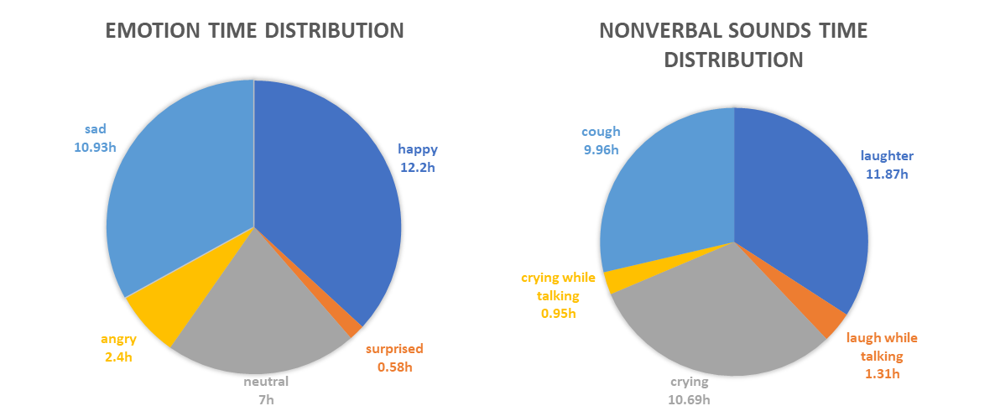
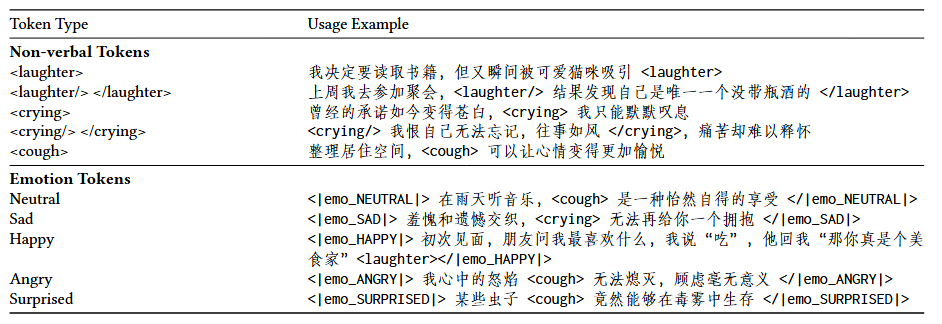
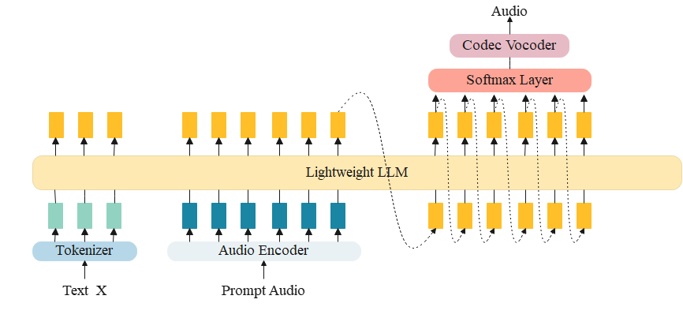

SMIIP-NV: A Multi-Annotation Non-Verbal Expressive Speech Corpus for
LLM-Based Speech Synthesis
Abstract. In natural language communication, emotions are often conveyed through non-verbal sounds (NVs), such as laughter, crying, and cough. However, most existing text-to-speech (TTS) corpora lack annotations for these non-verbal sounds, leading to a scarcity of systems capable of generating them. To address this gap, we introduce SMIIP-NV, a non-verbal speech synthesis corpus annotated with both emotions and non-verbal sounds, including laughter, crying, and cough. To the best of our knowledge, SMIIP-NV is the largest publicly available open-source expressive speech corpus that includes non-verbal speech. It comprises 33 hours of speech data, covering five distinct emotions and three types of non-verbal sounds, with detailed transcriptions and precise timestamps for each occurrence of non-verbal sounds. Additionally, the corpus provides annotations for speech segments that contain laughter or crying. To demonstrate the utility of this dataset, we establish a baseline for non-verbal speech synthesis by employing a lightweight large language model (LLM).
Contents
SMIIP-NV

Figure 1. SMIIP-NV Time Distribution across Emotions and Non-verbal Sounds

Figure 2. Special Token Usage for Non-verbal Sounds and Emotions

Figure 3. Overall Architecture of the Proposed Baseline Model
Audio Samples
SMIIP-NV Raw Data Samples
| Emotion | Audio Sample |
|---|---|
| Happy 去电影院看电影，结果发现坐在我旁边的是个吃货，<laughter>气氛瞬间轻松起来了。 |
|
| Sad 走在曾经熟悉的地方<crying>，现在却显得如此陌生。 |
|
| Neutral 我读了一本新书<cough>，内容很吸引人。 |
|
| Angry 每个小问题都能让我心情恶劣<cough>，真是烦透了。 |
|
| Surprised 水獭在水中玩耍时，竟然会使用小石头工具<cough>。 |
Baseline Model Synthesis Samples
| Text | Synthesized Audio |
|---|---|
| 收到朋友的生日礼物，居然是一顿外卖！<laughter>这可真是别出心裁。 | |
| 看着昔日的留言<crying>心如刀绞，无法释怀。 | |
| 翻开一本新书，<cough>期待着接下来的故事展开。 | |
| <|emo_HAPPY|>看着镜子里的我，突然觉得我像个开心果！<laughter>这个比喻真不错！</|emo_HAPPY|> | |
| <|emo_SAD|>在梦中再次相遇，<crying>，醒来却只剩空虚。</|emo_SAD|> | |
| <|emo_NEUTRAL|>收拾房间的过程中，发现了许多旧物件，引发怀旧。</|emo_NEUTRAL|> | |
| |emo_ANGRY|>面对不断的挑衅，我的耐心已经达到极限！</|emo_ANGRY|> | |
| <|emo_SURPRISED|>蜜蜂是唯一能以舞蹈方式传递信息的昆虫，太神奇了！</|emo_SURPRISED|> |
CosyVoice2 Fine-tuned Synthesis Samples
| Text Prompt (with tokens) | Synthesized Audio |
|---|---|
| 我发现小的时候玩具现在卖的贵<laughter>，我真希望我能早点发家致富！ | |
| 那些共同的梦想，如今只剩回忆。<crying>我再也无力追寻。 | |
| 今天参加了一场和朋友的<cough>线上游戏 |
SMIIP-NV Download
The SMIIP-NV dataset is licensed under CC BY-NC 4.0. This allows the dataset to be freely used for research and educational purposes, provided that proper attribution is given. However, commercial use of the dataset is not permitted.